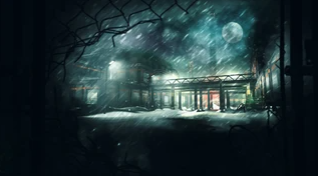
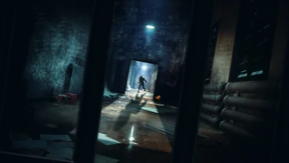
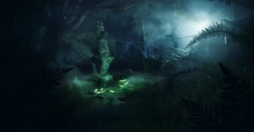
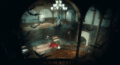
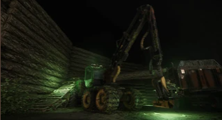

Об игре
Deceit это проверка на доверие, а также ваших инстинктов в многопользовательском шутере от первого лица.
Вы очнетесь в неизвестном месте от странного голоса вместе с пятью выжившими.
Треть из вас была заражена вирусом, но кто сможет выбраться?
С течением времени возникают перебои с электроэнергией погружая вас во тьму, позволяя инфицированным игрокам трансформироваться в форму “Ужаса”, и атаковать вас.
Найдите союзников и соберите предметы расположенные по всей карте чтобы увеличить ваши шансы на выживание.
Окружение было специально создано, для того чтобы вызвать конфликт среди членов вашей группы, создавая сомнения на счет истинных намерений игроков.
Зараженные попытаются покрывать друг друга, внося еще больше разногласий в команду, в то время как “Невиновные” будут следить за странным поведением других выживших и стараться найти тех, кому можно доверять.
Перебои с электроэнергией - это период, когда тьма окутывает карту, позволяя зараженным принять так называемую форму “Ужаса”.
В таком виде они намного быстрее, сильнее и имею ночное видение, с одной единственной слабостью - это свет.
В своем истинном обличии зараженные наводят ужас, а различные анимации убийства позволят игрокам создавать жуткие, но между тем смешные ситуации.
Карты
| КАРТА | ОПИСАНИЕ | ИЗОБРАЖЕНИЕ |
|---|---|---|
| Arctic | Арктика - это внутренняя карта с областями лабораторий, контейнеров, офисов и коридоров. |  |
| Asylum | Asylum - это карта в больничной тематике, где игроки сталкиваются с различными медицинскими палатами, большими открытыми пространствами и маленькими тесными комнатами. |  |
| Forest | Карта представляет собой открытую лесную местность, заполненную деревьями, небольшими холмами, несколькими домиками, причалом и прожекторами. Он состоит из трех отдельных зон, отгороженных автоматическим ограждением безопасности, которое открывается только в конце каждого раунда. |  |
| Manor | Игроки окажутся в недавно заброшенном поместье. Первой зоной будет верхняя часть особняка, вторая зона будет находиться внизу, а последняя зона - в саду. |  |
| Lumberyard | Лесозаготовительный склад предлагает освежающее пространство для вашей группы - заполненный лесом овраг, где каждый участок, который вы проходите, ощущается и выглядит по-другому, чем предыдущий. |  |